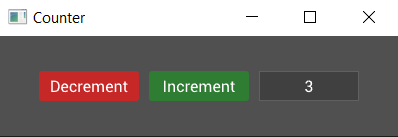

Events
Alright, we've got a nice looking counter but how do we make it do something? Time for some events!
Handling Events
The Widget trait has another method called on_event which will allow us to react to events and change the internal data (the counter value) and child widgets (the buttons and label) of our counter. Add the following to the implementation of the Widget trait for our counter, right below the on_build() method:
fn on_event(&mut self, state: &mut State, entity: Entity, event: &mut Event) {
}
Note that the method signature is very similar to on_build but, instead of returning something, there's an extra argument, a mutable reference to some Event.
Messages
So what is the event? Well an event is a struct which contains a Message and some meta data about the event, like its origin and target entities. Okay so what's a Message? Well a message is a dynamic object pointer to some user defined type. In fact it can be any type as long as it implements PartialEq. So let's make a message type which we can respond to. Add this just before we declare the Counter struct:
#[derive(PartialEq)]
pub enum CounterEvent {
Increment,
Decrement,
}
Now we can modify the on_event method to do something when it receives this type of event:
fn on_event(&mut self, state: &mut State, entity: Entity, event: &mut Event) {
if let Some(counter_event) = event.message.downcast() {
match counter_event {
CounterEvent::Increment => {
self.value += 1;
}
CounterEvent::Decrement => {
self.value -= 1;
}
}
}
}
Here we attempt to downcast the message within the event to the ConterEvent type, and on success match against the options, incrementing or decrementing the counter value in response.
Okay, so our counter widget can now respond to counter events, but how does it get them? Something needs to send those events. How about those buttons?
Callbacks
To send events when our buttons are pressed we need another new concept, which is callbacks. Most widgets allow you to set a callback (a closure) which will run when the widget is interacted with or changes state. In this case it's probably best to learn by example so change the decrement button to look like this:
Button::with_label("Decrement")
.on_press(|data: &mut Button, state: &mut State, button: Entity|{
button.emit(state, CounterEvent::Decrement);
})
.build(state, row, |builder|
builder
.set_width(Pixels(100.0))
.set_height(Pixels(30.0))
.class("decrement")
)
For clarity I've included the argument types but these can be inferred by the rust compiler. Notice that the arguments shadow those of on_build and the first 3 of on_event, providing a mutable reference to the widget (Button in this case), a mutable reference to State, and the Entity id of the button.
Using the button id and state we call emit() to send a CounterEvent::Decrement event. As the name suggests, this callback will be triggered when the button is pressed.
But where does the event go? Remember that tree which was mentioned before? Well, by default, events are sent up the tree, hitting every ancestor on its way to the root (the window). Because the button is a descendant of the counter (counter -> row -> button), the counter will receive the event after the button is pressed. The figure below depicts the tree of widgets with our custom counter widget:

We're almost there. Adding in the callback for the increment button (left as an exercise for the reader), we now have a counter whose value will change when the buttons are pressed! Hang on though... nothing seems to be happening... the label still shows zero. Ah, we need to make two more modifications to update the label.
First, we need to store the entity id of the label in the counter so we can access it in on_event. Change the Counter to:
#[derive(Default)]
struct Counter {
value: i32,
label: Entity,
}
and then the label to:
// We now assign the output of the label build to the label variable
self.label = Label::new("0").build(state, row, |builder|
builder
.set_width(Pixels(100.0))
.set_height(Pixels(30.0))
);
Finally, we need to update the label text in the on_event method:
fn on_event(&mut self, state: &mut State, entity: Entity, event: &mut Event) {
if let Some(counter_event) = event.message.downcast() {
match counter_event {
CounterEvent::Increment => {
self.value += 1;
self.label.set_text(state, &self.value.to_string());
}
CounterEvent::Decrement => {
self.value -= 1;
self.label.set_text(state, &self.value.to_string());
}
}
}
}
We can set the label this way because every widget has a text property which can be set through its entity id. If this was a more complicated widget, such as a slider, then we would update it using an event targeted at the widget. For example, we could send a SliderEvent::SetValue() event to a slider widget to update it.
We finally have a working counter!
You can find the full code for this guide so far in the examples/counter.rs file in the tuix repository. Run with cargo run --release --example counter.

In the next section we'll start to look at how we can make our counter widget more re-usable with some reactivity.